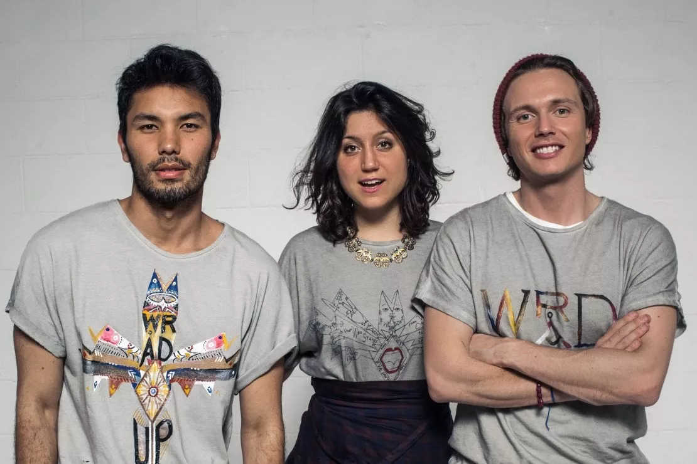
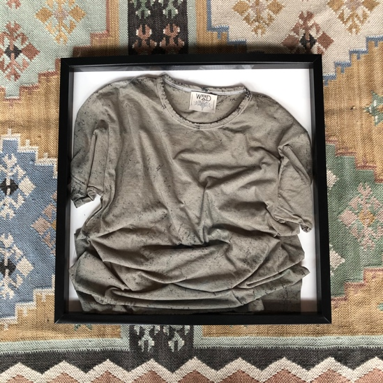

Wrad
Wrad, la moda per cambiare il mondo
La moda come strumento di cambiamento, una t-shirt come il manifesto su cui scrivere la possibilità del nostro futuro.
Chi sono i protagonisti di tutto ciò?
Il marchio fondato da Matteo Ward con Silvia Giovanardi e Victor Santiago, tre giovani animati dalla convinzione di rendere migliore il mondo attraverso l’innovazione sostenibile. “Il settore del fashion dal quale tutti e tre proveniamo è il secondo più inquinante dopo quello petrolifero – spiega Matteo, CEO di Wrad. Lungo questa strada, entro il 2030, dovremo scegliere se utilizzare le risorse idriche del pianeta per sostenere il sistema moda così come lo conosciamo oggi, o per sostenere il genere umano e animale. Tuttavia la moda è anche un potente strumento di comunicazione che ci permette di trasmettere valori come la sostenibilità, l’etica, il rispetto per il pianeta e di attivare il cambiamento.
Un metodo inusuale
La design company italiana Wråd ha prodotto una maglietta grigia sostenibile, tinta con la grafite, utilizzando un'antica tecnica di epoca romana. Ma c'è di più: questa t-shirt è prima di tutto un servizio e un investimento in un progetto molto più ampio. Che può gettare nuove basi per la moda sostenibile.
Questo processo, ispirato ad un’antica tecnica di tintura romana, è oggi brevettato da Alisea ed è noto come tecnologia g_pwdr. Il passo finale è stato identificare i prodotti tangibili attraverso i quali le persone, la community, avrebbero finalmente potuto manifestare la loro identità, il loro desiderio di diventare parte della soluzione e agire in modo responsabile per il nostro pianeta e le nostre persone. Il team Wråd ha cosí iniziato a progettare prodotti con uno scopo, uno dei quali Graphi-tee approvato dal purpose brand di Alisea, Perpetua – è stato riconosciuto, per il suo dna sostenibile e innovativo, come il migliore prodotto di design dell’anno al Red dot design award 2017.
Obbiettivi e aspirazioni
Wråd oggi è una realtà focalizzata sulla progettazione di servizi per catalizzare il cambiamento positivo, attraverso il proprio programma di ricerca e sviluppo per l’innovazione sostenibile, la consulenza in ambito sostenibilità e comunicazione, un programma formativo e il marchio moda. Le attività diversificate di Wråd, motivate da uno scopo comune, si basano su tre pilastri fondamentali: istruire, innovare e rendere liberi attraverso il design.
“Il nostro obiettivo chiave è rendere il design un mezzo per catalizzare il cambiamento positivo nel mondo fondando tutto sull’innovazione e sull’economia circolare. L’economia circolare ci consente di restituire vita allo scarto tessile, riportarlo nella supply-chain e allo stesso modo disegnare nuove supply-chain che danno voce ai player, creano nuova forza lavoro, stimolano l’innovazione e la ricerca e sviluppo e, soprattutto, ci consentono di restituire al territorio italiano la capacità di mantenere la sua rilevanza nel mondo dal punto di vista manifatturiero nel tessile”, conclude Matteo Ward.